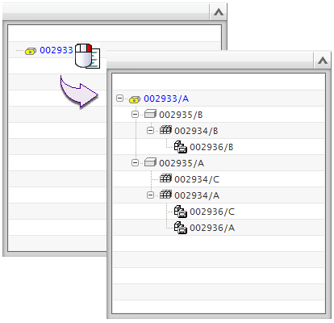

Simulation Search View is an extension of the Simulation File View panel in the Simulation Navigator. Use this view to search Teamcenter for CAE items related to the item that you select in the Simulation File View.
